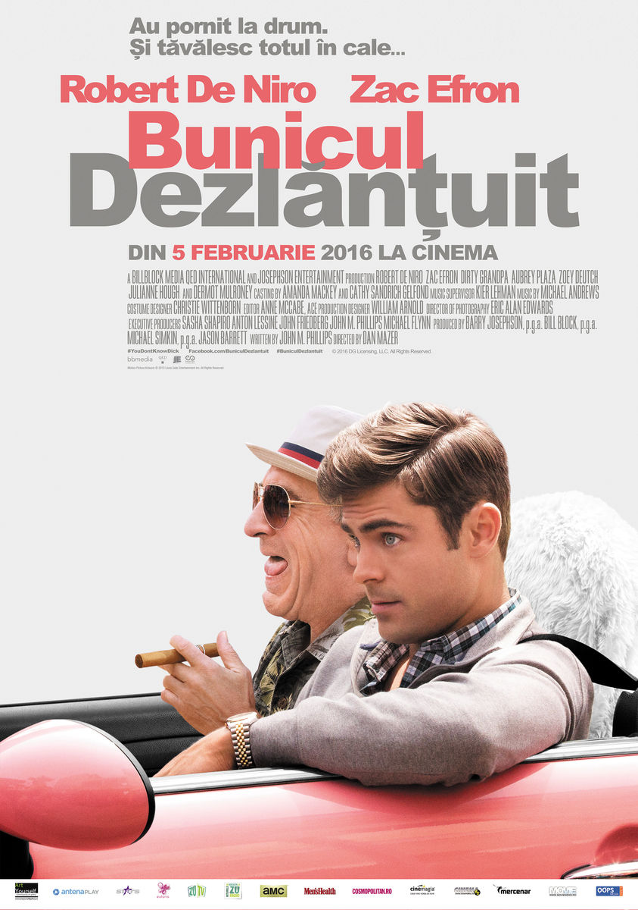

Comedie
Dirty Grandpa
Jason Kelly (Zac Efron) se află la doar o săptămână distanță de nunta cu fiica răsfățată a șefului său, deci cu un pas mai aproape de visul lui de a deveni partener la firma de avocatură unde lucrează de mult. Abia târziu, tânărul va realiza că toate planurile îi sunt periclitate de bunicul guraliv, cu care pleacă în vacanța de primăvară la Daytona.
Între petreceri scandaloase, conficte aprinse în bar și o noapte epică de karaoke, bătrânul Dick (Robert De Niro) pare de neoprit. Încearcă cele mai provocatoare experiențe și face tot posibilul să-și convingă nepotul să i se alăture. La finalul acestui concediu incredibil, bunicul dezlănțuit și formalul său nepot descoperă că există multe lucruri pe care le pot învața unul de la celălalt și leagă o relație mai strânsă ca niciodată.
Comedia „Bunicul dezlănțuit” îl prezintă, din 5 februarie la cinema, pe Robert De Niro în rolul unui veteran lipsit de prejudecăți și hotărât să demonstreze că viața merită trăită din plin la orice vârstă. Filmul este distribuit de Freeman Entertainment.